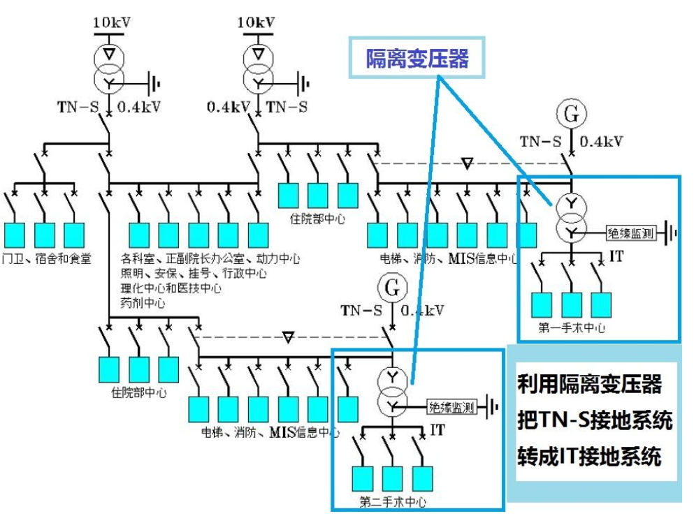
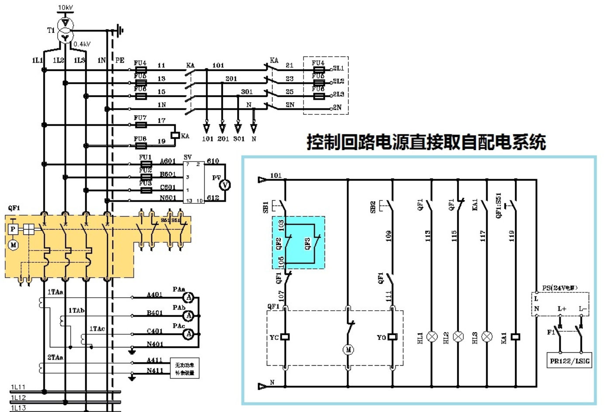
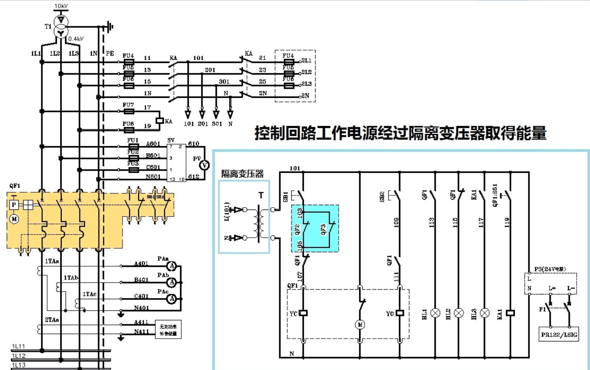

我们知道，TN接地系统是当下最流行的接地形式。但在TN系统下，一旦出现单相接地故障，也即漏电，则系统的保护装置（包括断路器和漏电保护器）立即起动，切断电源。相比之下，IT系统发生了单相接地故障后，还可以继续运行2个小时。
在某些特殊场合，例如缆车和医院手术室，一旦出现漏电，我们不可能让缆车乘客在空中吊着，或者让病人在手术台上等着。所以，需要利用隔离变压器把TN接地系统转换为IT接地系统。如下：

电网上的过电压脉冲特点是电压高，但能量很小。利用隔离变压器，使得过电压脉冲无法传送到隔离变压器的次级，以实现较为干净的电源。
这种做法在控制回路中十分多见。
我们看下图：
这是未加隔离变压器的原图：

这是增加了隔离变压器的新图：

如此一来，消除了来自电网的干扰瞬态过电压，还抑制了谐波。
此图摘自我的书：《低压成套开关设备的原理及其控制技术》第6.6节“低压成套开关设备的控制原理”图6-41。
隔离变压器相当于电感。由电感的感抗表达式 [公式]可知，频率越高，感抗也越大，所以隔离变压器能消除谐波的干扰。
在许多情况下我们需要将特殊电压换成标准电压，或者将标准电压换成特殊电压，此时隔离变压器就能实现此功能。
例如我们在国外，我们带的电器额定电压是220V，但配电电压只有120V，此时就能利用专用的隔离变压器把120V电压转换成220V电压供电器使用。
另外，在一些特殊场合，例如电加热器、整流器等等，往往工作电源的电压低而电流大，系统阻抗当然也低。这时就要用隔离变压器来转换，例如电炉专用的变压器、电焊机变压器等等。
它的原理除了对用电器进行滤波保护以外，最重要的一点便是次级线圈没有接地。所以如果有人误触单相线路的话，这个人实际并没有接入电流的回路中，是个开路。而一般的TN接地系统，因为变压器引出的中性线会进行接地处理，人站在大地上触摸相线的话，实际便与大地在相线与中性线间组成了回路，有电流通过。这两者是完全不同的，所以在JGJ-16中一般规定使用隔离变压器可以与使用无害低压、剩余电流保护器一样，作为特殊场合的安全用电保护措施。
国家规定的用电安全电压是36V。如果使用隔离变压器后，输出高于36Ⅴ以上的电压，对人体来说，只是相对安全了，人体接触任意一根输出端都不会触电，但同时接触相同绕组的两根高于36Ⅴ电压的输出线，仍会有触电的危险。